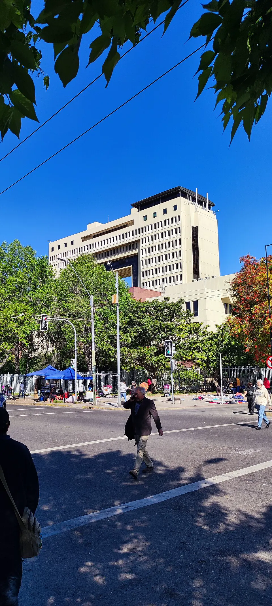

Retorno a la democracia

El 14 de diciembre de 1989, Patricio Aylwin, candidato de la Concertación de Partidos por la Democracia, ganó la elección presidencial con más de la mitad de los votos, frente a Hernán Büchi y Francisco Javier Errázuriz. El 11 de marzo de 1990 recibió el mando en el nuevo edificio del Congreso Nacional, en Valparaíso, y puso fin a la Dictadura militar. La transición fue pactada y gradual: Augusto Pinochet continuó como comandante en jefe del Ejército hasta 1998, y la Constitución de 1980 mantuvo senadores designados, el sistema electoral binominal y otros límites a las mayorías. El gobierno creó la Comisión Nacional de Verdad y Reconciliación, cuyo informe de 1991 estableció la verdad sobre las Violaciones a los derechos humanos con resultado de muerte y desaparición, y buscó equilibrar justicia, reparación y estabilidad. En lo económico, mantuvo la economía de mercado y aprobó una reforma tributaria para financiar el gasto social, lo que contribuyó a reducir la pobreza. Hubo tensiones con el Ejército, como el "ejercicio de enlace" de 1990. El balance de la transición es debatido: para unos fue un ejemplo de estabilidad y acuerdos; para otros, una democracia limitada por las instituciones heredadas.
Versión para niños
El 11 de marzo de 1990, Patricio Aylwin asumió como presidente de Chile en el Congreso Nacional, en Valparaíso. Había sido elegido por los ciudadanos en diciembre de 1989. Así terminó la dictadura y Chile volvió a ser una democracia. El Congreso volvió a funcionar, los partidos políticos pudieron actuar libremente y las personas pudieron expresar sus ideas sin miedo. Fue un día de mucha alegría para gran parte del país.
Para maestros
Nivel sugerido: 2° medio
Objetivo: Comprender las características de la transición chilena a la democracia, sus logros y sus límites.
Preguntas para la clase:
- ¿Qué significa que la transición chilena haya sido "pactada"?
- ¿Qué instituciones heredadas de la dictadura limitaron a los primeros gobiernos democráticos?
- ¿Cómo se buscó conocer la verdad sobre las violaciones a los derechos humanos?
Actividad (20–30 min): En grupos, los estudiantes elaboran una línea de tiempo de la transición entre 1988 y 2005 (plebiscito, reformas de 1989, elección de 1989, Informe Rettig, salida de Pinochet de la comandancia en jefe, reforma constitucional de 2005) y argumentan en qué momento consideran que la transición terminó.
Fuentes sugeridas: Biblioteca del Congreso Nacional (BCN); Museo de la Memoria y los Derechos Humanos; Memoria Chilena.
Objetivos de Aprendizaje (Currículum Nacional)
- 6° básico · HI06 OA 08 Comparar diferentes visiones sobre el quiebre de la democracia en Chile, el régimen o dictadura militar y el proceso de recuperación de la democracia
- 2° medio · HI2M OA 20 Analizar la transición a la democracia como un proceso marcado por el plebiscito de 1988, la búsqueda de acuerdos entre el gobierno y la oposición
- 2° medio · HI2M OA 21 Analizar la sociedad chilena posterior a la recuperación de la democracia, considerando la estructura social
- 3° o 4° medio (Chile y la región latinoamericana) · FG-CHLA-3y4-OAC-02 Explicar procesos comunes de los Estados latinoamericanos en la historia política reciente, incluyendo la relación entre el poder civil y las fuerzas armadas, transiciones
Personajes
Revisión humana pendiente. Cómo se revisa · Reportar un error
Cómo citar: Historia de Chile. (2026). Retorno a la democracia. En Historia de Chile: atlas y línea de tiempo. https://moises-salgado.github.io/historia-de-chile/momento/retorno-a-la-democracia.html